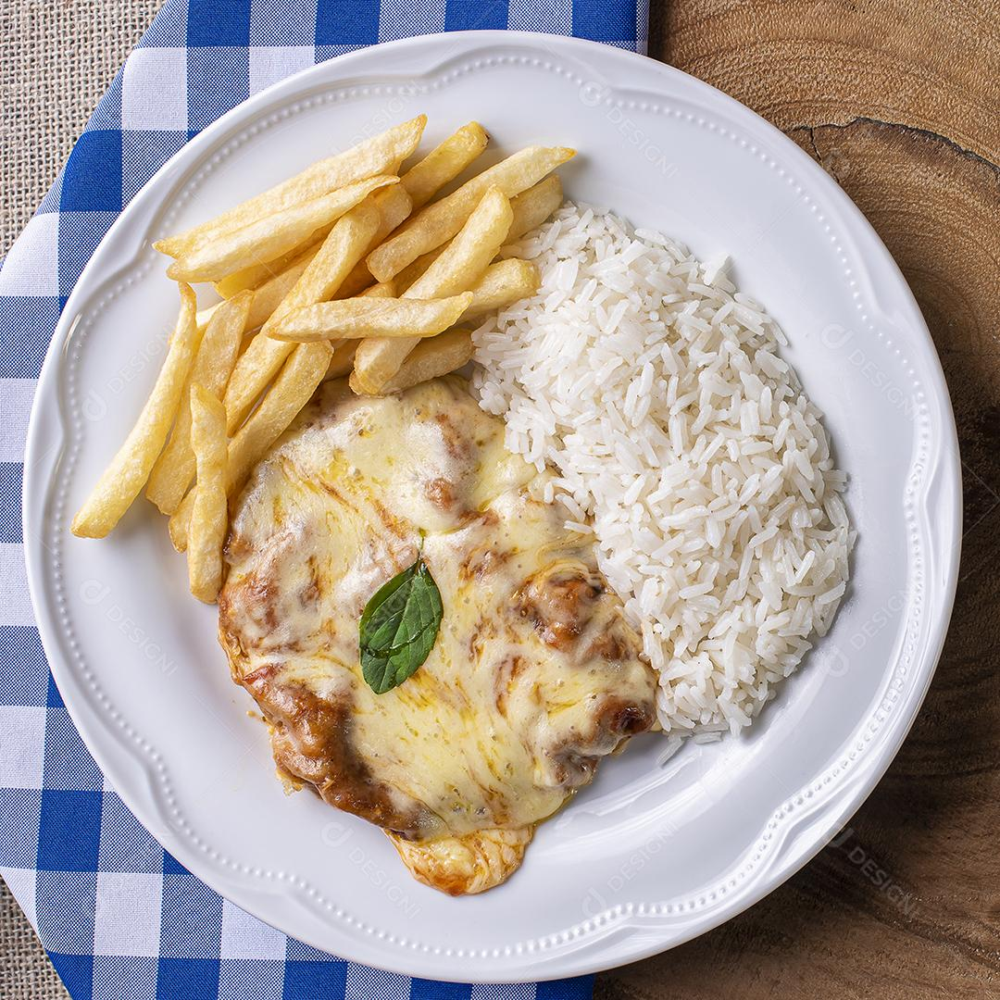

Parmegiana

Descrição
Você sabia que um dos clássicos do PFs é uma receita de origem brasileira?
Muito simples de preparar, o filé à parmegiana é preparado com uma carne de sua preferência, empanado no ovo e na mistura de farinhas e queijo, frito, e depois vai ao forno coberto com molho de tomate e queijo.
Ingredientes
- 150 gramas de farinha de trigo
- 150 gramas de farinha de rosca
- 150 gramas de queijo parmesão ralado
- 4 filés de carne bovina
- 3 ovos
- Óleo
- Molho de tomate caseiro a gosto
- 200 gramas de queijo muçarela fatiado
- Sal a gosto
- Pimenta-do-reino a gosto
Modo de Preparo
- Tempere os filés com sal e pimenta-do-reino.
- Em um tigela, misture a farinha de trigo, a farinha de rosca e queijo parmesão ralado.
- Passe a carne na mistura de farinhas.
- Depois passe a carne no ovo batido e retorne para a mistura de farinhas.
- Frite em óleo quente.
- Deixe dourar os dois lados.
- Seque em papel-toalha.
- No tabuleiro, espalhe o molho de tomate e coloque os bifes.
- Despeje mais um pouco de molho sobre cada um.
- Coloque fatias de queijo em cada bife e leve ao forno preaquecido a 180 graus Celsius até o queijo derreter.
- Finalize com queijo parmesão ralado.